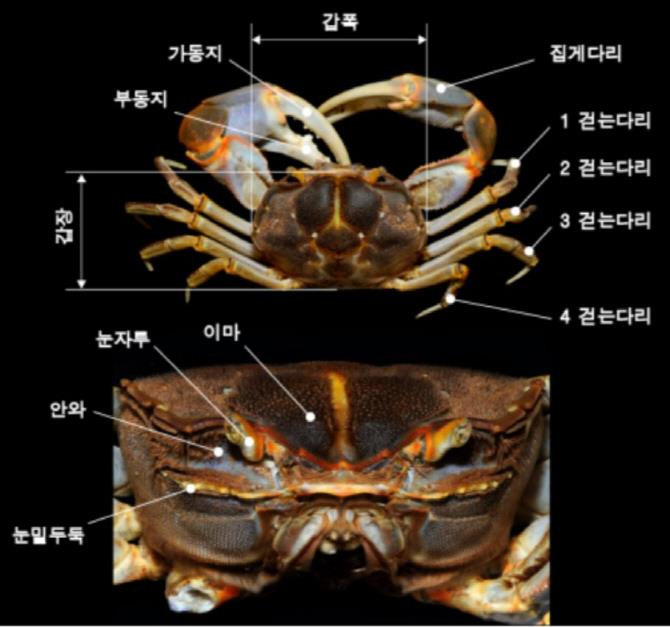

소개
갯게는 담수가 유입되는 갯벌의 조간대 상부나 하구 습지 등에서 매우 드물게 발견되는 해양보호생물이다.
1941년에 처음으로 국내 서식이 확인되으나, 해안가 개발 등으로 인해 서식지가 훼손되면서 개체수가 급감하고 있다. 과거에는 서식지역이 서해, 남해, 제주 등 38개 지역으로 알려졌었지만, 현재 국림해양생물자원관이 2019년 실시한 서식조사에서는 13개 지역에서만 서식이 확인되었다.
2017년 해양수산부에서 군산대학교 김형섭 교수님 연구팀에 갯게의 인공증식 연구용역을 위탁하였으며, 연구팀은 2018년 처음으로 갯게의 인공증식에 성공했다.
외관
갑각의 길이는 큰 것이 40mm정도이고 폭은 50mm정도이다. 윤곽은 양쪽 옆가장자리가 볼록한 사각형이며 이마는 짧은 혀 모양으로 가장자리가 둥그스름하다.
면에는 깊은 세로홈이 있다. 갑각의 옆가장자리는 볼록하도 눈뒷니를 포함해 4개의 넓은 이가 있다.

특징
개체수가 적은 희귀종이며, 해안가나 하구 습지 등 훼손되기 쉬운 지역에 서식하기 때문에 멸종위기에 처해 있다.
과거엔 전국 해안에서 발견되었지만 현재는 남해안과 제주도 일부지역에서, 세계적으로는 일본과 타이완에 분포한다.